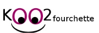

Sofian Lahlou
Etudiant en 2eme année de BTS SIO option SLAM
"Toute réussite comprend des défis, mais aussi des opportunités."

À propos de moi
Je suis en deuxième année de BTS SIO, option SLAM, où je me forme au développement d'applications et à la gestion de projet. Au cours de mes stages, j'ai travaillé sur différents projets, comme la création d'interfaces UI/UX avec Figma, le développement de scripts Python exploitant des API, ou encore l'automatisation de tâches avec Microsoft Power Automate.
Je cherche à continuer à apprendre et à améliorer mes compétences en développement logiciel, tout en explorant de nouvelles technologies pour concevoir des solutions efficaces et adaptées aux besoins des utilisateurs.
N'hésite pas à parcourir mon portfolio pour découvrir mes projets !
Compétences techniques
Langages
Outils & Frameworks
Systèmes & Serveurs
Design & UI/UX
Expériences Professionnelles
Stage 1ère année
Création de maquettes UI/UX sur Figma
Pour mon premier stage, j'ai intégré E-axess (filiale de Septeo) en tant que stagiaire en développement et conception d'interfaces utilisateur. Pendant six semaines, j'ai travaillé sur plusieurs projets, notamment la création de maquettes UI/UX avec Figma pour le back-office et l'outil Skipper, la documentation du Revenue Management System (RMS) en vue de développer un bot assistant, ainsi que l'automatisation de l'onboarding des nouveaux employés via un bot Teams conçu avec Microsoft Power Automate. Cette expérience m'a permis de découvrir le travail en entreprise, d'approfondir mes compétences en design et en automatisation, et de mieux comprendre l'importance des outils numériques dans le secteur hôtelier.
Technologies et outils utilisés
Stage 2ème année
Développement de script et programme python
Pour mon second stage, j'ai effectué un stage de six semaine dans l'entreprise Hicham Lahlou. Durant ce stage, deux projet m'ont été assigné. Le premier la réalisation d'un programme python possédant une interface graphique et permettant le tri d'un dossier contenant plusieurs photo dans d'autres dossier sélectionnés. Le deuxième était cette fois si un programme qui permet après le choix d'un subreddit, de trier et résumer les 30 poste les plus populaires des dernières 24 heures sur ce même subreddit, tout ça dans un fichier google sheets (Utilisation de l'API Reddit, Google cloud et Google Sheets). Cette expérience m'a permis de renforcer mes compétences en développement python et le travail dans un environnement à 100 % en distanciel.
Technologies et outils utilisés
Formation
BTS SIO (Services Informatiques aux Organisations)
2023 - 2025
Formation en cours au Campus Saint-Aspais de Melun. Pour plus de détails sur le contenu de la formation, consultez le référentiel officiel du BTS SIO.
Le BTS SIO est un diplôme national de niveau Bac+2 qui forme aux métiers de l'informatique. Cette formation permet d'acquérir des compétences techniques et relationnelles essentielles pour travailler dans le domaine du numérique.
Veille Technologique
Ma méthode de veille
Après avoir choisi l'informatique quantique comme sujet de veille, j'ai mis en place une surveillance régulière des principaux sites d'actualités technologiques francophones. Cette approche systématique comprend :
Je consulte quotidiennement ces sources pour identifier et analyser les avancées significatives dans le domaine de l'informatique quantique. Cette veille me permet de rester informé des dernières innovations et des enjeux majeurs du secteur.
L'informatique quantique
L'informatique quantique est un domaine en pleine expansion qui exploite les principes de la mécanique quantique pour effectuer des calculs. Contrairement aux ordinateurs classiques qui utilisent des bits (0 ou 1), les ordinateurs quantiques utilisent des qubits, qui peuvent exister dans plusieurs états simultanément. Cette propriété, appelée superposition, ainsi que l'intrication quantique, permettent aux ordinateurs quantiques de résoudre certains problèmes beaucoup plus rapidement que les ordinateurs classiques.
Les applications potentielles sont vastes, allant de la découverte de nouveaux médicaments et matériaux à l'optimisation de problèmes complexes dans la finance et la logistique. Cependant, le développement d'ordinateurs quantiques viables présente des défis techniques considérables.
Articles de veille
La recherche médicale avec l'informatique quantique
Comment l'informatique quantique va révolutionner la recherche médicale.
En savoir plusPremiers qubits stables à température ambiante
Une avancée majeure dans la stabilisation des qubits à température ambiante.
En savoir plusL'avènement des ordinateurs quantiques
Comment la technologie se prépare à l'ère de l'informatique quantique.
En savoir plusSommet Choose France : IA et Quantique
Les grandes annonces tech du sommet de Versailles.
En savoir plusRévolution secteur financier grâce à l’informatique quantique
Quel sera l'impact de l'informatique quantique dans la finance.
En savoir plusProgrès majeurs dans l'informatique quantique
IBM, Microsoft et Boeing font des avancées significatives.
En savoir plusDebugger quantique par Google
Google innove avec un nouvel outil de débogage quantique.
En savoir plusRecord de 504 qubits en Chine
La Chine établit un nouveau record en informatique quantique.
En savoir plusAWS révolutionne avec Ocelot
Amazon Web Services innove avec sa puce quantique maison.
En savoir plusProjets

Projet Koo2Fourchette
Site de recettes de cuisine interactif (1ère année)
En savoir plusProjet Covoitse
Site de covoiturage intéractif pour les étudiants de Saint Aspais (2ème année)
En savoir plusProcédures
Contact
Restons en contact
N'hésitez pas à me contacter pour toute question ou proposition de collaboration.